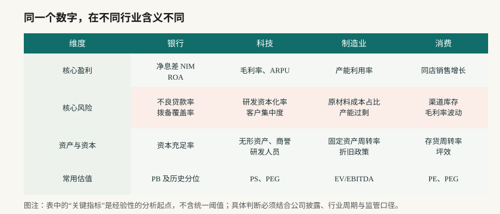
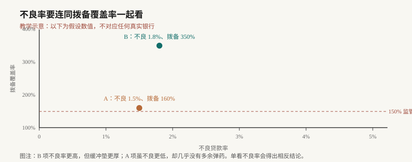

行业特化分析：同一指标，不同含义
同样是 15% 的 ROE，银行业的含义、科技业的含义与制造业的含义并不相同。行业特化不是换一套公式，而是先弄清这个行业靠什么赚钱、最大的风险是什么，再去找对应的那几个关键指标。
为什么需要行业特化
通用比率（ROE、毛利率、资产负债率）在所有行业都能算，但“算出来是多少”和“多少才算好”完全不是一回事。同一组数字，在不同行业背后是不同的商业模式与风险：银行的资产负债表几乎全是金融资产，制造业几乎全是实物资产，平台型科技公司的价值又大量不在账面。

一个原则：先问“这个行业靠什么赚钱、靠什么亏钱”，再选指标。用一个行业的框架硬套另一个行业，不只会看错，还会在最关键的地方留白。
银行：拨备与资本
银行的经营是“用负债融资、赚利差、承担信用风险”，因此它的报表结构与一般企业相反：负债（存款）是经营的基础，资产（贷款）是风险所在。四个关键指标：
- 净息差（NIM）：净利息收入 ÷ 生息资产平均余额，是银行的“利润率”。利率下行周期中它通常收窄。
- 不良贷款率：不良贷款余额 ÷ 贷款总额，是滞后指标；同时要看“关注类贷款”占比，它是潜在不良的预备队。
- 拨备覆盖率：贷款损失准备 ÷ 不良贷款余额。监管设定不低于 150% 的下限（具体口径与差异化安排以现行监管规定为准）。
- 资本充足率：反映资本厚度，不同类别银行的最低要求与附加要求不同，以现行《商业银行资本管理办法》及配套规定为准。
最容易被忽略的一点是：不良率必须和拨备覆盖率一起看。同样是不良率 1.5%，拨备覆盖率 160% 与 350% 的抗风险能力完全不同。

关于 ROA 与 ROE：银行天然高杠杆（总资产常为净资产的十几倍），ROE 会被杠杆放大，因此横向比较时 ROA 更能反映真实经营能力。把两个 ROA 相近但杠杆不同的银行放在一起，谁的 ROE 高不一定代表谁经营得好。
科技：研发与毛利率
- 研发资本化：研发支出费用化会压低当期利润，资本化则把成本后移到以后期间。资本化必须满足《企业会计准则第6号——无形资产》规定的条件，但是否满足依赖判断，不同公司差异可能很大。同行业两家资本化率不同时，利润不可直接比较。
- 毛利率趋势：毛利率若连续下降，可能是竞争加剧或产品同质化。但不同商业模式的毛利率天然不同（软件、平台、硬件差异极大），跨模式比较无意义，只在同模式内看趋势。
- 用户与 ARPU：对平台型公司，用户数、留存率、单用户收入等非财务指标可能比当期利润更能反映阶段；但这些数据口径不统一，引用时要看公司定义与统计范围。
- 股权激励：股权激励费用会进入利润表（影响利润）并稀释股权，两者都要看。境外上市常披露调整后（Non-GAAP）利润，剔除股权激励等项；需要同时看它剔除了什么，而不是直接当成真实盈利。
这些指标的“阈值”不能拍脑袋。后文的工作台会把可计算的部分交给公式，而把需要判断的部分留给阅读附注：资本化条件、具体的用户定义、股权激励的摊销安排，都只能在披露里找到。
制造业：产能与原材料
- 产能利用率：开工率决定固定成本能否被摊薄。它通常不在财报主表直接给，要靠“产量 ÷ 设计产能”推算，或从管理层讨论、募集说明书等处找；引用时需声明数据来源。
- 固定资产周转率：营业收入 ÷ 固定资产净值，衡量每一元固定资产能带来多少收入。它持续下降意味着产能过剩或资产效率下降，但也可能只是新产能刚投产、尚未达产。
- 原材料成本占比：从成本构成或附注中提取。若原材料占比上升而毛利率下降，说明公司未能把涨价转嫁给客户，是竞争格局转弱的线索；反之也可能只是短期价格波动。
- 折旧政策：同类设备的折旧年限不同，年利润差异会很大。比较同业时先确认折旧年限、残值率与减值政策是否可比。
制造业特别容易被“周期”支配：收入、毛利率、产能利用率会同步大起大落。因此看趋势和周期位置（第 20 章讲的周期股 PE 陷阱同样适用）比看单年数字重要。
消费：同店与渠道库存
- 同店销售增长：剔除新开门店影响后的内生增长。若总营收靠不断开店而同店零增长甚至负增长，说明增长依赖数量而非单店效率，长期难以持续。注意同店口径（开业满多久才算）各家可能不同。
- 渠道库存：向经销商压货可以在短期内做高收入，但终端未消化。可从合同负债、应收、经销商回款周期以及公告披露中寻找线索；渠道库存高企是很多消费股走弱的早期信号。
- 毛利率的稳定性：对以品牌为竞争力的公司，毛利率长期稳定往往对应定价权；逐年下滑则提示品牌或渠道优势可能在减弱。但毛利率也会因产品结构、渠道结构变化而波动，需要看原因。
不要把经验阈值当成规则：市面上常见的“渠道库存超过三个月即危险”“毛利率波动超过 5% 就说明品牌弱”等说法，都是经验判断而非准则或监管标准；本页不采用这些固定阈值，只保留“看趋势与看原因”的方法。
银行风险缓冲工作台
默认演示（贷款总额 10,000 亿元、不良贷款余额 150 亿元、贷款损失准备 240 亿元）可手工复算：不良率 = 1.5%，拨备覆盖率 = 160%，拨备恰好高于 150% 下限。金额单位可任意，只要各个输入一致。
修改数据，即时复算
三个贷款相关金额需同一币种与同一时点；资本充足率需使用风险加权资产而非总资产。
工作台只算三个比率，不会告诉你这家银行好不好；它把不良、拨备与资本放在同一张纸上，便于与前几期和同业对照。
核查清单与自测
先写清这个行业的盈利模式与最大风险，再选 5–10 个关键指标。
银行：不良率与拨备覆盖率、资本充足率与 ROA 一起看，不单看 ROE。
科技：先看研发资本化条件与口径，再看毛利率趋势与非财务指标定义。
制造业：产能利用率与原材料成本的数据来源要写明，并拉平折旧政策。
消费：同店口径与渠道库存线索需回到披露，不用固定的经验阀值下结论。
自测一：两家银行 ROE 都是 15%，能否直接说经营能力相同？
不能。ROE 含杠杆效应，需拆成 ROA 与财务杠杆分别比。在总资产收益率相近时，高杠杆的银行 ROE 更高但风险也更大；还要结合不良与资本水平看风险承担。
自测二：一家银行不良率比同业低，是否一定更安全？
不一定。还要看拨备覆盖率与不良认定是否充分（如逐期迭代、逾期与重组贷款）。不良率低可能是认定标准不同或不良尚未暴露，需结合关注类与拨备一起看。
结论：行业特化的产出是一张“该行业最该盯的几张表”，而不是一套新公式。把关键指标选对，比把指标算到小数点后两位重要得多。
依据与边界
本页所有数字与图例均为教学示意，不指向任何真实公司，也不构成投资建议。行业分析属于分析者自行构建的框架，不是监管强制步骤。
银行的拨备覆盖率、资本充足率等属于监管指标，其定义、下限与差异化安排以现行监管规定为准（如贷款损失准备、资本管理相关办法）；本页只概括思路，不代替规则原文。非财务指标（用户数、产能利用率、同店口径等）定义不统一，引用时需注明公司或数据源。